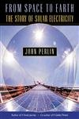

Books
-  From Space to Earth - The Story of Solar electricity by John Perlin - This text tracks the evolution of the technology of photovoltaics, the use of solar cells to convert the sun's energy into electricity, from its shaky 19th-century beginnings mired in scientific controversy to its success in the space program to its position as a promising power source.
- Winning Our Energy Independence by S. David Freeman - Winning Our Energy Independence shares energy solutions from S. David Freeman, a man who has spent his life at the forefront of energy policy.
- The Solar Economy: Renewable Energy for a Sustainable Global Future by Hermann Scheer - The Solar Economy, by one of the world's most effective analysts and advocates, lays out the blueprints, showing how the political, economic and technological challenges can be met using indigenous, renewable and universally available resources, and the enormous opportunities and benefits that will flow from doing so.